Bjerring
Rötlicher Granit
Höhe: 225 cm
Größte Breite ca.: 135 cm
Breite oben: 85 cm
unten: 87 cm
Dicke ca. : 35 cm
Runenhöhe: 12 - 23 cm
Runeninschrift :
Thorgun, Karlungs (?) Tochter, errichtete [diesen] Stein nach Thore, ihrem Mann, Tholfs Sohn, von St [...]; aber Tofi [der] Schmied - sein Verwandter - hieb [die Runen]. Der Stein [...] von seinem Platz, aber (?) [...] Ingulv (?).


56 - Bjerring - Letztes Update 15.09.2025
Listennummer : DR - kein, da Neufund / DK MJy 10
Navidaten: 56.37900 9.62237
oder:
Bjerring Byvej 22, 8850 Bjerringbro
Transliteration:
Seite A: : þurkuntr : karuks : tutiR : risþi : stin : (þ)... | aft : þuri : uir sin : þulfs : sun : ą : st... |
ian : tufi : smiþr : hiu : frinti : hns : | : stin : ---... : uiltr : auR : (s)taþ : ia(n) ... | : stuk- : (u)(r)t--R (:) --n : a---- (:) -ir(þ/b) :
Seite B: i(k)(u)(l)- ...in
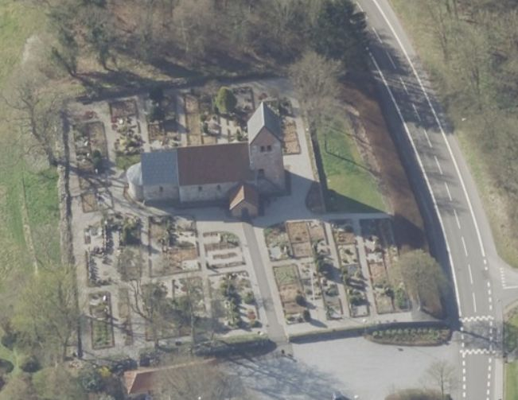
Dies ist ein Luftfoto vom 18.04.2023 von Skråfoto, das die Kirche in Bjerring zeigt. Skråfoto ist eine Webanwendung, die von Klimadatastyrelsen weltweit kostenlos bereitgestellt wird - Freie Nutzung unter Beachtung der Lizenz: CC BY 4.0. Die Aufnahmen werden seit 2017 alle zwei Jahre erneuert und neben einer Senkrechtaufnahme wird ein Schrägbild aus jeder Himmelsrichtung angeboten, das man über eine Adresssuche aufrufen kann.
Der Runenstein wurde erst im November 1996 bei Restaurierungsarbeiten in der Bjerring Kirche entdeckt.
Er lag ca. 15 cm unter dem Fußboden des Waffenhauses, mit der Inschrift nach oben. Entdeckt wurde er vom Maurermeister Finn Jensen und seinem Gehilfen, als sie ein Elektrokabel in die Kirche legen wollten. Der Stein lag als Schwellenstein und teilweise als Fundament für das romanische Säulenportal, mit den zwei Löwen im Tympanon, vor der Nordtür, heute dem einzigen Zugang in die Kirche, da die Südtür zugemauert wurde. Das heutige Waffenhaus aus roten Ziegelsteinen mit Granitsockel wurde im Jahr 1889 erbaut.
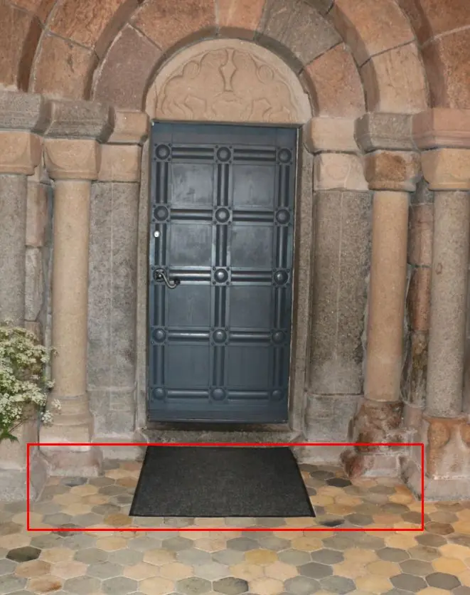
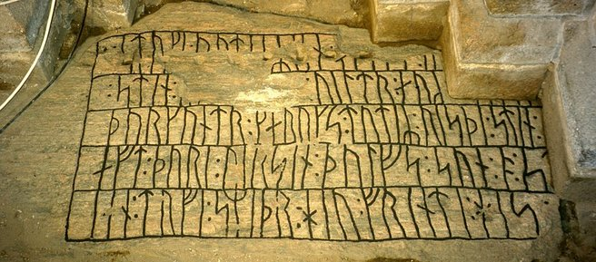
Eigenes Foto vom 10.06.2022 - Fundlage rot eingezeichnet / Foto: Nationalmuseum Kopenhagen
Der Fund wurde rasch dem Nationalmuseum und der Presse mitgeteilt. Die Federführung lag beim lokalen Museum, dem Viborg Stiftsmuseum. Die erste Untersuchung des Runensteins fand am 26. und 27. November 1996 an Ort und Stelle statt. Bei der Bergung des Steins am 22. Januar 1997 stellte sich heraus, das auf der Rückseite eine Maske eingeritzt war. Die obere Hälfte der Maske (mit schwachen Spuren von roter Farbe) fehlt leider, da man damals etwas von dem Stein abschlug, damit er sich an der gewünschten Stelle einpassen ließ.
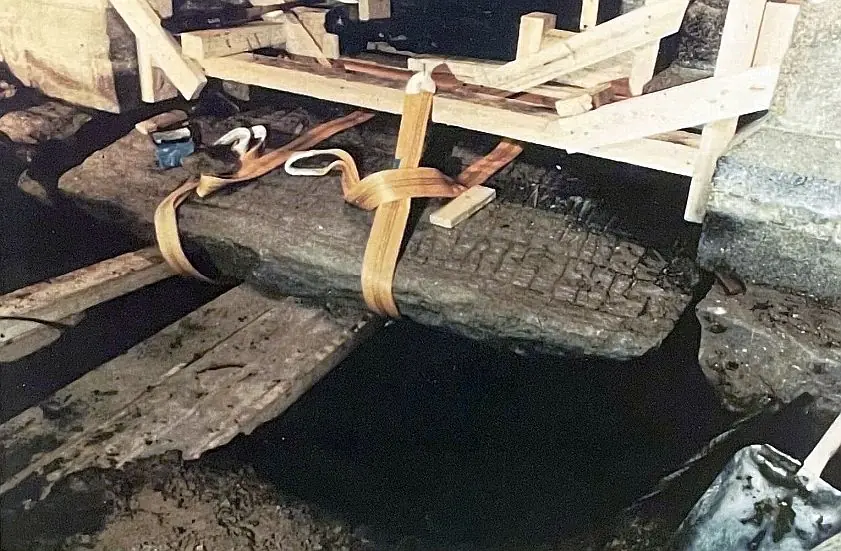
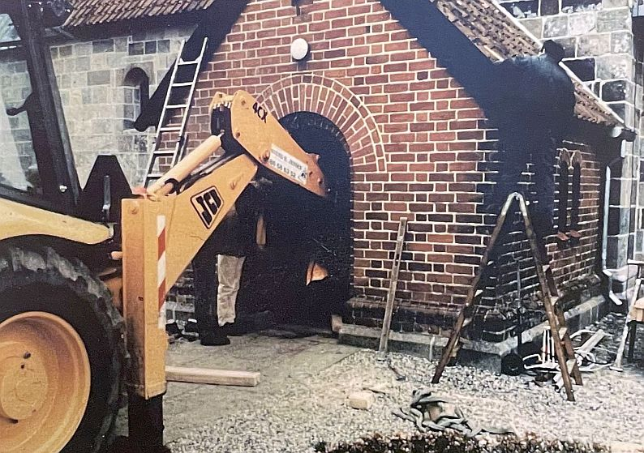
Die beiden obigen Aufnahmen habe ich am 12.06.2022 im Gudenådalens Museum von dort ausgestellten Fotos abfotografiert.
Die bewahrte Inschrift befindet sich auf einer Fläche von ca. 170 cm x 94 cm in fünf parallelen Linien, die jeweils von unten nach oben gelesen werden. Dazu kommt noch eine kurze sechste Linie (Ingulv) an der linken Schrägkante des Steins.
Die Runeninschrift beginnt mit der mittleren Linie und liest sich zunächst auf den nach rechts liegenden Linien weiter. Der Text setzt sich dann auf der zweiten Linie von links zur äußersten linken Linie fort.
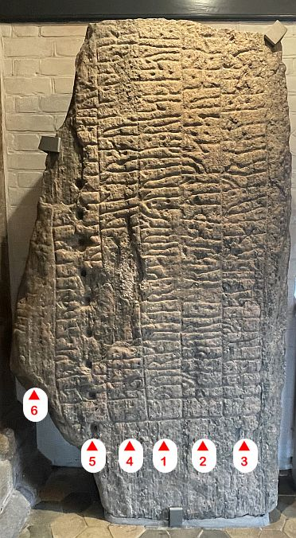
Eigenes Foto - Leserichtung von mir visualisiertDer Runenstein wird auf das Ende des 9. Jahrhunderts datiert. Ende Juni 1997 wurde der Runenstein im Waffenhaus der Kirche aufgestellt.
Der Stein hat ein Gewicht von ca. 1,5 Tonnen. Er wurde zurechtgehauen und hatte wohl ursprünglich eine Höhe von 3,0 bis 3,5 m. Auf der linken Seite sieht man übereinander 9 Spaltlöcher über die versucht wurde die Steinkontur zu begradigen. Dadurch wurde auch die Steinoberfläche / Inschrift an zweit Stellen schwer geschädigt!
Die Maske auf der Steinrückseite im Mammenstil, die mit roter Farbe nachgezeichnet wurde, ist aufgrund der dichten Anbringung zur Wand nur schwer zugänglich. Da muss man schon auf die Sitzbank rechts daneben steigen um die zu entdecken!
Die Kirchenmitarbeiterin, sogenannter "Graver", war gerade mit Arbeiten beschäftigt und wunderte sich, warum ich da auf die Bank kletterte. Als ich ihr meine Fotos der Maske zeigte, war sie sehr verwundert, denn dass es da auch noch was auf der Steinrückseite zu bewundern gibt, war ihr völlig unbekannt. Das neben dem Runenstein ausgelegte, einlaminierte Infoblatt geht da auch nicht drauf ein.
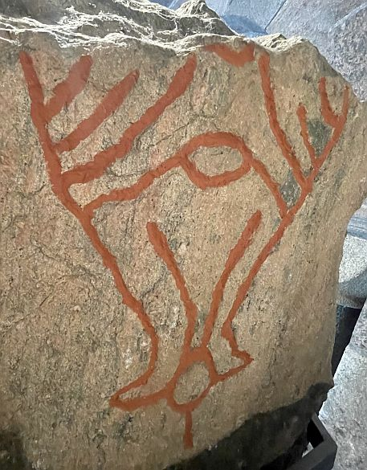
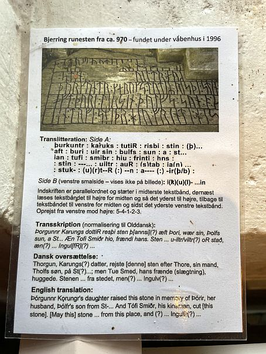
Eigene Fotos vom 06.06.2022Im Zusammenhang mit der Entfernung des Steins vom Kirchenfundament führte die Archäologin Mette Iversen vom Viborg Stiftsmuseum kleinere Ausgrabungen durch, die jüngere Bestattungen in der Nähe des Runensteins ohne Verbindung zu ihm enthüllten. Es liegt nahe, den Stein mit dem ungewöhnlich reichen Kriegergrab in der Nachbargemeinde Mammen in Verbindung zu bringen, das dendrochronologisch auf 970/71 datiert wird - siehe unten.
Die deutsche Übersetzung der Runeninschrift wurde mir freundlicherweise von Prof. Dr. Klaus Düwel (*10.12.1935 - 20.10.2020), Uni Göttingen, auf Anfrage zur Verfügung gestellt.
In der Ausgabe von Nytt om runer, Nummer 12, 1997, ist diese Zeichnung der Inschrift mit Transliteration enthalten:.
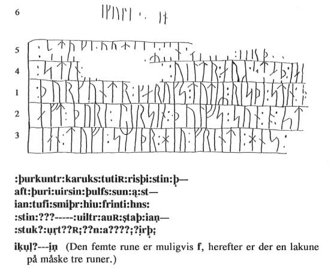
Laut meinen Aufzeichnungen war ich erstmals am Samstag, 26.05.2001, vor Ort. Danach kam ich am Donnerstag, 25.08.2016, nochmals vorbei und konnte diese Fotos machen.
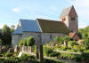 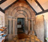 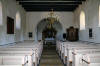 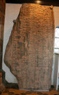 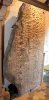 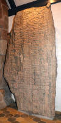 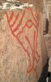 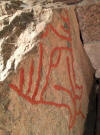


Nun war es mir im Rahmen meiner 2022er Jütland Wikinger Tour möglich am Montag, 06.06.2022, erneut vorbeizuschauen.
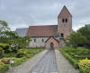 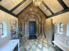 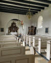 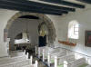 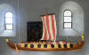 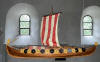 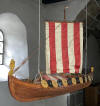 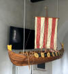


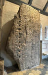 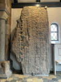 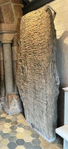 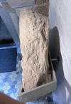


Die Maske im Mammenstil habe ich diesmal mit dem Smartphone fotografiert und kam darüber zu einem viel besseren Ergebnis.
In der Kirche hängt inzwischen ein schönes Wikingerschiff von der Decke. Wie ich der ausliegenden Infobroschüre entnehmen konnte handelt es sich um ein Geschenk von Frede Nielsen, Viborg, der es 1960 von seinem Großvater, Kapitän Friedrich Matsen, Adsbøl, geschenkt bekam, der es in Auftrag gegeben hatte. Es ist ein Modell des Gokstadschiffes im Maßstab 1:24 und wurde von dem bekannten Schiffsmodellbauer Willem Karel Versteeg (*02.08.1880 - 19.02.1962) aus Antwerpen gebaut. Es ist ein Modell in höchster Qualität und kostete damals 9000 Francs (Das wären ca. 1370 ). Das Modell wurde am 23. September 2018 im Zusammenhang mit einem Erntedank Gottesdienst in der Kirche aufgehängt.
Diese sw Aufnahme wurde von Marie Stoklund (*11.08.1934 - 03.09.2021, dänische Runologin am dänischen Nationalmuseum) 1987 aufgenommen.
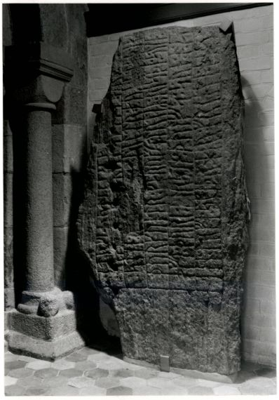
Der Digitale Sammlung des Nationalmusems Kopenhagen entnommen. Lizenz: CC-BY-SA
Im Vorfeld zu dem 2016 erschienenen Buch von Lisbeth M. Imer (*1973, Runologin am Nationalmuseum Kopenhagen) "Danmarks Runesten - en fortælling" reiste sie mit dem Fotografen Roberto Fortuna zur Bestandsaufnahme durch die Lande. Dieser hat die Runensteine mit Schräglicht aufgenommen und darüber wirklich herausragende Fotos erzielt. Dieses Foto entstand am 07.03.2012.
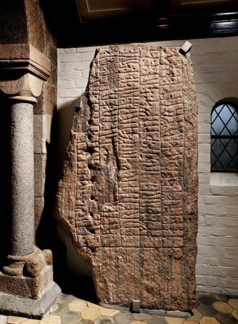
Der Digitale Sammlung des Nationalmusems Kopenhagen entnommen. Lizenz: CC-BY-SA
Die Informationen zu diesem Runenstein aus der dänischen Runendatenbank finden sich hier.
Der entsprechende Eintrag in "Fund og Fortidsminder" ist hier verlinkt. Darin ist inzwischen dieser Zustandsbericht des Steinrestaurators Leif Vognsen aus dem Jahr 2018 eingebettet.
Über diesen Link finden sich zu dem Runenstein Informationen des Forschungsprojektes "Runes" der Akademie der Wissenschaften zu Göttingen.
Literaturhinweise:
Runestenen i Bjerring kirke, Marie Stoklund, Fra Nationalmuseets Arbejdsmark, 1997, S. 56-64
Bjerring Runesten, Nytt om runer, Nummer 11, 1996
Nytt om runer, 12, 1997, S. 5-7
Iversen, Mette u.a. - Mammen. Grav, kunst og samfund i vikingetid - Århus 1991, 343 Seiten.
Flyer der Bjerring Kirche von 2019
Die Bjerring Kirche liegt nur etwa 4 km von der Nachbargemeinde Mammen entfernt, wo 1868 im Bjerringhøj ein reiches Kammergrab der Wikingerzeit ausgegraben wurde. Die Verzierungen der Funde, insbesondere eine Axt und Kummetbeschläge (Detail) waren namengebend für den sogenannten Mammenstil. Bei einer Nachgrabung im Jahre 1986 konnte anhand von Holzfunden eine dendrochronologische Bestimmung des Mammengrabes für den Winter 970/971 vorgenommen werden.


Diese hochauflösende Aufnahme der Mammenaxt wurde am 19.04.2020 von Roberto Fortuna und Kira Ursem - Nationalmuseum Kopenhagen - angefertigt.
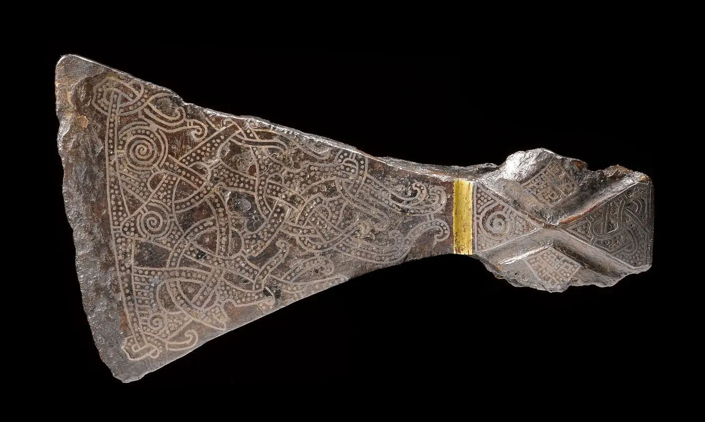
Der Digitale Sammlung des Nationalmusems Kopenhagen entnommen. Lizenz: CC-BY-SA
Im Gudenådalens Museum in der Nachbargemeinde Bjerringbro (liegt direkt an der Ortsdurchgangs - Straße 525) ist u.a. Bildmaterial zu den Ausgrabungen in Mammen, sowie Nachbildungen z.B. der Mammen-Axt, der beiden Kummet und der 56 cm hohen Wachskerze aus dem Grab ausgestellt.

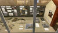 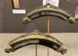 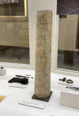 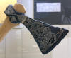 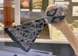 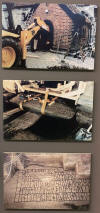


Dem Museum ist im Freien ein Runenstein-Park angeschlossen, in dem Kopien von 25 Runensteinen aus der Gegend aufgestellt sind (Skjern 1+2, Ålum 1-4, V.Velling, Ø. Velling, Grensten, Langa 1-6, Torup, Sdr. Vinge1+2, Hjermind1+2, Sahl1+2, Bjerring und Lee).
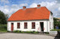 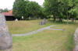 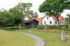 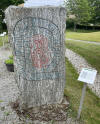 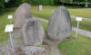


Örtlichkeit: 8850 Bjerringbro, Vestre Ringvej 5 - Webseite: http://www.gudenaadalens-museum.dk/ - E-mail: pv@saluki.dk - Telefon: - Mobiltelefon: +45 2533 2850
Öffnungszeiten usw. hier abrufbar
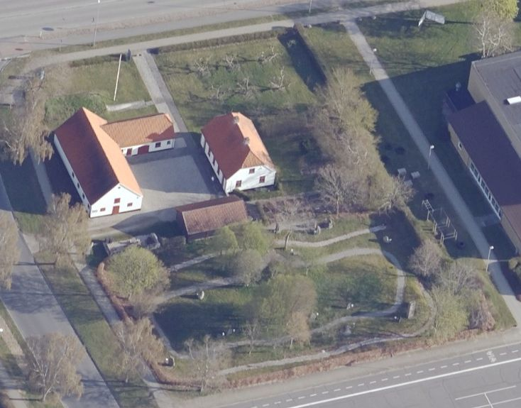
Über die Webseite von "Skråfoto" habe ich dieses Luftbild - Datum 02.04.2023 - vom Museum und dem Runensteinpark abgerufen (15.09.2025). Skråfoto ist eine Webanwendung, die von Klimadatastyrelsen weltweit kostenlos bereitgestellt wird - Freie Nutzung unter Beachtung der Lizenz: CC BY 4.0.. Aktuell sind Aufnahmen aus den Jahren 2017, 2019, 2021 und 2023 abrufbar.
Bei meinem Besuch im Nationalmuseum in Kopenhagen am 07.08.2015 habe ich diese Fotos von originalen Fundstücken aus dem Mammengrab aufgenommen:
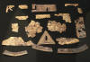 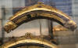 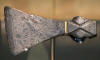 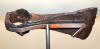


Weiterführende Informationen zum Mammenfund finden sich auf den Seiten des Nationalmuseums in Kopenhagen. In der dort neu gestalteten Austellung, die ab dem 26.06.2021 für die Dauer von drei Jahren zu sehen war, befanden sich mehrere Originale aus dem Mammen Grab. Einige konnte ich bei meinem Besuch am Samstag, 24.09.2022, fotografieren.


Nahezu 50 tolle Fotos von den Fund-/Textilstücken aus dem Mammen Grab sind heutzutage über das Bildarchiv des Nationalmuseums - Digitale Sammlung - abrufbar.
In meiner Rubrik "Aktuelle" Infos mit Datum 12.05.2021 steht:
"Bjerringhøj - Der Wikinger in der falschen Kiste"
titelt am 10.05.2021 ein Online Beitrag von "Spektrum.de",
der mir heute auf dem Smartphone angezeigt wurde. Darin wird
über mehrere Seiten ausgeführt, dass im Rahmen des Forschungsverbundes
"Fashioning the Viking Age" (Start: 01.09.2018) eine mit "Slotsbjergby"
beschriftete Fundkiste aus dem Archiv des Nationalmuseums in Kopenhagen geholt
und untersucht wurde. Darüber wurde festgestellt, dass der Inhalt nicht zu dem
Wikingergrab auf Seeland gehörte, sondern tatsächlich die über 100 Jahre
verschwundenen Knochen aus dem Mammengrab beinhalteten. Die weiteren
Untersuchungen ergaben, dass es sich um zwei menschliche Individuen gehandelt
hat - einen Mann in den Dreißigern von ca. 1,71 bis 1,78 m Größe, der häufig
geritten sein muss, aber auch eine weitere Person, vermutlich weiblich im Alter
von 17 - 20 Jahren. Weitere Informationen zu dem überraschenden Fund finden sich
in dem
Untersuchungsbericht aus dem Fachjournal
"Antiquity" vom 04.05.2021, S.1 - 18.